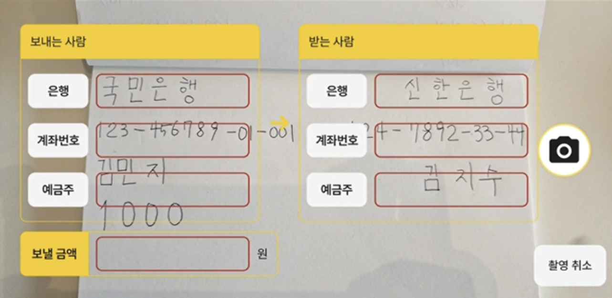
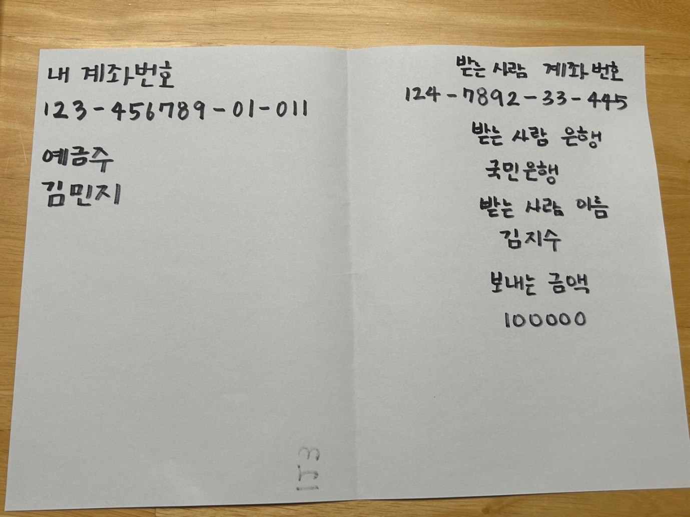
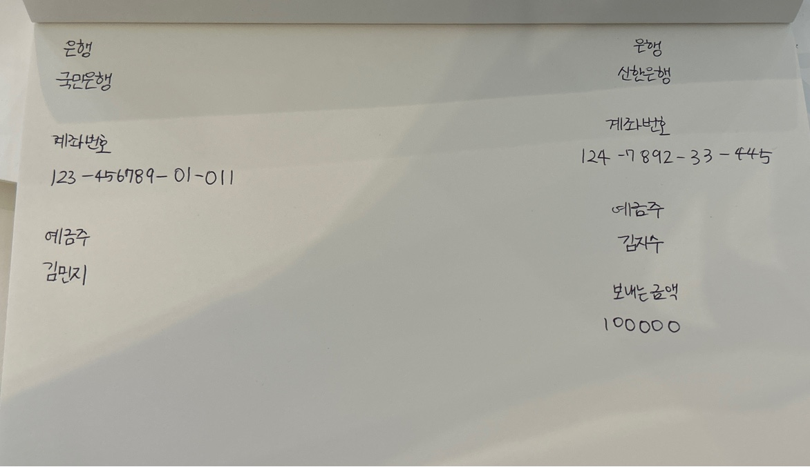
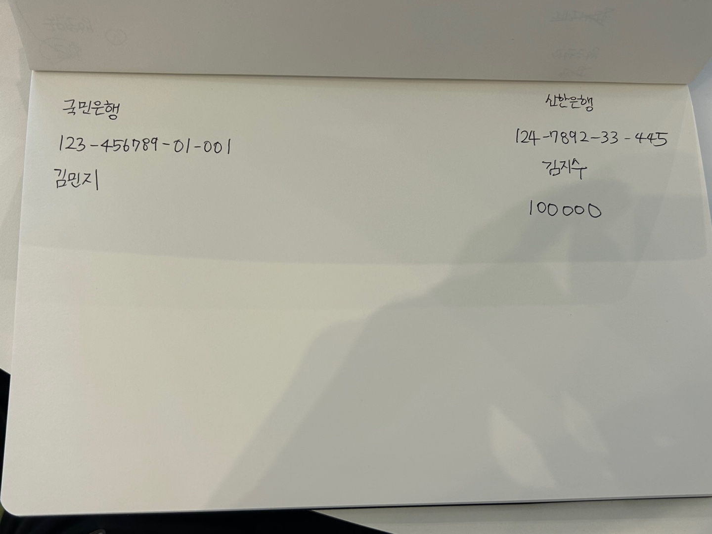
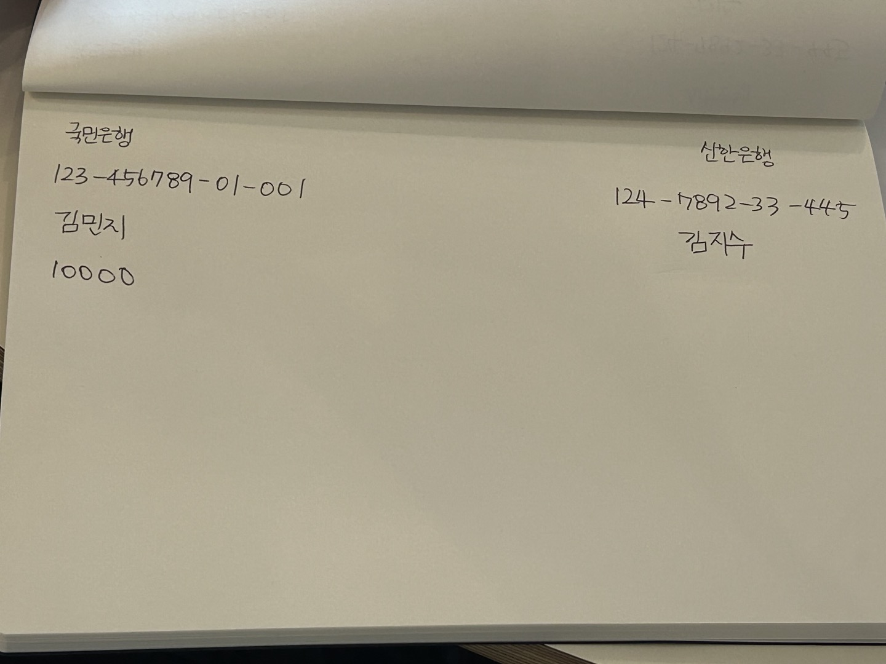
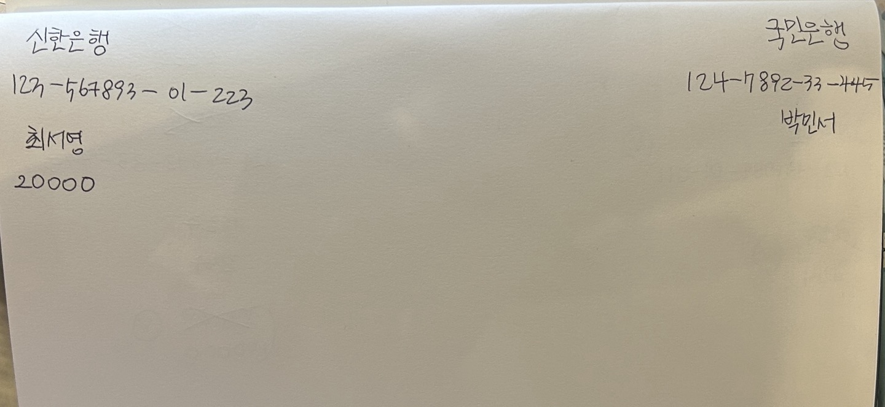

은행명, 계좌번호, 예금주, 금액을 직접 씁니다.
Activity 05 · FinTech Hackathon
종이통장
모바일 송금이 낯선 시니어 사용자가 종이에 계좌정보를 직접 쓰고 촬영하면, AI가 이체 정보를 구조화해 자동 입력하는 송금 UX 가능성을 검증한 해커톤 프로젝트입니다.
당신에게 가장 익숙한 송금 앱

Project Introduction
작은 키패드 대신, 종이에 쓰는 방식을 AI 송금 입력 방식으로 바꿀 수 있는지 실험했습니다
종이통장은 모바일 송금이 낯선 시니어 사용자가 은행 창구의 이체전표처럼 종이에 계좌정보를 직접 작성하고, 이를 촬영하면 AI가 이체 정보를 자동으로 추출하는 송금 서비스 아이디어입니다. 완성형 앱 구현보다 손글씨로 작성한 이체 정보를 AI가 실제로 정확히 구조화할 수 있는지 빠르게 검증하는 데 집중했습니다.
One Line
어르신에게 익숙한 종이 작성 방식을 Vision API 기반 송금 입력값으로 전환한 초기 기술 검증
이후 깨비 할머니 통장과 우리동네 어르신통장으로 확장되는 핵심 아이디어인 “손글씨 이체”의 출발점을 만든 프로젝트입니다.
앱에서 작성한 종이를 카메라로 촬영합니다.
Vision API가 필요한 금융 필드를 추출합니다.
JSON 데이터를 송금 화면 입력값으로 반영합니다.
Problem Definition
모바일 송금이 어려운 이유는 기능 부족이 아니라 방식의 낯섦이었습니다
기존 모바일 송금은 계좌번호, 은행명, 예금주, 금액을 작은 화면에서 직접 입력해야 합니다. 시니어 사용자는 메뉴 구조와 키패드 입력 방식에 익숙하지 않고, 숫자를 잘못 입력할 수 있다는 불안을 크게 느낍니다.
복잡하고 낯선 송금 절차
작은 키패드로 계좌번호와 금액을 직접 입력해야 하고, 처음 해보는 송금 과정에서 안내가 부족했습니다. 불필요한 정보가 많아 필요한 행동을 찾기 어렵다는 점도 문제였습니다.
쉽고 익숙한 방식의 송금
내 계좌를 한눈에 확인하고, 처음 사용하는 과정에서도 단계별 안내를 받으며, 은행 창구에서 하던 것처럼 종이에 쓰는 방식으로 송금하고자 하는 니즈가 있었습니다.
시니어가 모바일 송금을 배워야 하는 것이 아니라, 송금 방식이 익숙한 이체전표 방식으로 바뀌어야 합니다.
기존에 익숙한 패턴을 유지하면 학습 부담을 줄이고 사용자의 기대와 행동 흐름에 맞출 수 있다고 보았습니다.
Solution Overview
이체전표처럼 쓰고, AI가 입력하는 송금 서비스로 재설계했습니다
사용자는 종이에 은행명, 계좌번호, 예금주, 금액을 작성하고 앱은 이를 촬영해 자동으로 이체 정보를 입력합니다. 이 프로젝트의 핵심은 전체 금융 앱 구현이 아니라 손글씨 이체라는 핵심 기능의 가능성을 해커톤 안에서 빠르게 검증한 것입니다.
- 처음 사용하는 사용자도 이해할 수 있는 송금 안내 스크린
- 촬영 이미지에서 계좌번호, 은행명, 예금주, 금액을 자동 분류
- 송금 전후 돈 흐름을 확인할 수 있는 종이통장형 계좌 확인 컨셉

송금 안내 스크린
일러스트와 짧은 문장으로 송금 방법을 안내하고, 익숙한 사용자는 건너뛰기로 빠르게 진행합니다.
손글씨 이체 인식
직접 쓴 종이를 촬영하면 AI가 필요한 이체 정보를 필드 단위로 추출합니다.
종이통장형 계좌 확인
흩어진 계좌를 익숙한 통장 형태로 확인하는 보조 UX를 함께 기획했습니다.
Handwritten Transfer Pipeline
종이 이체정보를 앱에서 바로 쓸 수 있는 JSON 데이터로 변환하는 흐름을 설계했습니다
단순히 손글씨를 텍스트로 읽는 것이 아니라, 금융 서비스에서 바로 사용할 수 있도록 필드명을 고정하고 JSON 형태로 반환받는 구조를 설계했습니다.

사용자가 종이에 은행명, 계좌번호, 예금주, 금액을 쓰고 촬영합니다.
촬영 이미지를 ChatGPT Vision API에 전달해 손글씨 이체 정보를 분석합니다.
bank, account_number, name, amount 값을 고정된 구조로 반환받습니다.
반환 데이터를 송금 화면에 자동 입력하고 사용자가 최종 확인합니다.
JSON Example
{
"bank": "국민은행",
"account_number": "124-7892-33-445",
"name": "김지수",
"amount": "100000"
}OCR이 아니라, 이체정보 구조화가 핵심입니다.
Prompt Engineering
한국어 손글씨 이미지에서 필요한 금융 필드를 안정적으로 추출하기 위해 프롬프트를 반복 개선했습니다
초기에는 손글씨 이미지 전체를 인식한 뒤 바로 JSON으로 변환하도록 요청했지만, 응답이 불안정하거나 원하는 필드 구조로 정리되지 않는 문제가 있었습니다. 이후 이미지 내용을 영어로 번역하게 하고, 번역된 정보를 다시 JSON 구조로 변환하는 방식도 테스트했습니다.
“이거 인식해서 알려줘”
응답이 설명 문장으로 섞이거나, 필드명이 매번 달라져 앱에서 바로 파싱하기 어려웠습니다.
필드명 고정 + JSON만 반환
bank, account_number, name, amount를 지정하고 중괄호로만 감싼 JSON을 요구해 구조를 안정화했습니다.
위치보다 문맥이 중요
계좌번호, 은행명, 이름, 금액처럼 의미가 있는 필드는 위치보다 문맥 기반 인식이 중요했습니다.
서비스 데이터로 쓰기
API 응답을 사람이 읽는 답변이 아니라 앱 입력값으로 활용할 수 있는 데이터로 만드는 것이 목표였습니다.
최종 프롬프트 방향
왼쪽, 오른쪽 파트를 각각 영어로 번역하고, 중괄호로만 감싸진 JSON 포맷으로 변환한 것만 제공하도록 요청했습니다. JSON 필드명은 bank, account_number, name, amount로 고정했습니다.
Technology Validation
Clova OCR보다 문맥 기반 정보 구조화가 가능한 ChatGPT Vision API가 더 적합했습니다
손글씨 이체 기능이 실제 서비스로 확장될 수 있는지 확인하기 위해 OCR 기반 방식과 Vision API 기반 방식을 비교했습니다. 해커톤 단계에서는 대규모 모델 검증보다 다양한 필기체와 정보 배치 샘플을 반복 테스트하며 실현 가능성을 확인했습니다.
| Naver Clova OCR | 글자 추출에는 강점이 있었지만, 어떤 값이 계좌번호인지 예금주인지 별도 위치·의미 분석 로직이 필요했습니다. |
|---|---|
| ChatGPT Vision API | 이미지 안의 문맥을 함께 분석해 계좌번호, 은행명, 예금주, 금액을 구분하는 가능성을 확인했습니다. |
| 검증 결론 | 비정형 손글씨 이체정보를 앱 입력값으로 구조화하는 데 Vision API 방식이 더 적합하다고 판단했습니다. |
문자 인식
정보 구조화
JSON 반환
앱 입력값 변환
사용자 확인
Test Samples & Hackathon Output
다양한 필기체와 정보 배치에서도 핵심 필드를 구분할 수 있는지 반복 테스트했습니다
계좌번호, 예금주 이름, 은행명, 금액을 쓰는 위치가 달라져도 Vision API가 문맥상 정보를 구분할 수 있는지 확인했습니다. 종이에 별도 입력란을 명확히 표시하지 않아도 계좌번호와 이름, 은행명을 나누어 해석하는 가능성을 보았습니다.




Result
손글씨 이체 기능의 가능성을 해커톤 단계에서 검증했습니다
종이통장 프로젝트는 시니어 사용자를 위한 송금 경험을 “종이에 쓰고 촬영하는 방식”으로 재설계한 해커톤 프로젝트입니다. 팀 단위로 서비스 컨셉, UX 흐름, 화면 구성, 손글씨 인식 처리 방식, API 연동 가능성을 빠르게 검증했습니다.
깨비 할머니 통장, 우리동네 어르신통장과의 구분
종이통장은 손글씨 이체 하나에 집중해 Vision API로 송금 데이터를 구조화할 수 있는지 확인한 초기 기술 검증 프로젝트입니다. 깨비 할머니 통장은 이후 앱 구현, 데이터 검증, 서명 인증, 복지 기능까지 확장한 프로젝트이고, 우리동네 어르신통장은 서비스 기획, 사업화, 특허 출원까지 구체화한 기획 중심 프로젝트입니다.
Lesson Learned
AI 기능은 모델 호출보다 데이터 구조 설계가 중요했습니다
원하는 형식의 데이터를 안정적으로 반환받기 위한 프롬프트 설계와 후처리 구조가 중요하다는 점을 배웠습니다. 특히 금융 서비스에서는 인식 결과를 사용자가 확인하고 수정할 수 있는 안전한 흐름까지 함께 설계해야 합니다.